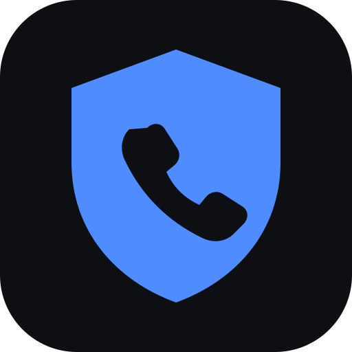

Caller GuardHave blocked and unknown calls read out to you, screened for you, checked and logged.
The honest part first
No app can show the real number behind No Caller ID or Blocked. The phone company never sends it to your phone. What your iPhone can do is read every caller out loud and make unknown callers say who they are before your phone rings. Turn on the settings below once and it all runs on its own.
On your iPhone (about 2 minutes)
1. Read every caller out loud
Siri says the caller's name, or the number, or "Unknown caller", when the phone rings.
Settings › Apps › Phone › Announce CallsChoose Always.
On older iOS: Settings › Phone › Announce Calls.
2. Make unknown callers say who they are
Your iPhone answers numbers that are not in your contacts, asks the caller for their name and why they are calling, then rings you and shows what they said on screen. Blocked and No Caller ID calls get screened too.
Settings › Apps › Phone › Screen Unknown CallersChoose Ask Reason for Calling.
On iOS 17 or 18 this is called Silence Unknown Callers: it sends those calls straight to voicemail instead.
3. Read voicemails live
If a screened caller leaves a message, you see the words appear on screen while they talk, and you can pick up if it matters.
Settings › Apps › Phone › Live VoicemailTurn it On.
4. Free spam blocking from your carrier
Your carrier's free app labels and blocks known spam before it reaches you.
Verizon: Call Filter · AT&T: ActiveArmor · T-Mobile / Metro: Scam Shield. Get it from the App Store, then turn it on in Settings › Apps › Phone › Call Blocking & Identification
5. One tap to check a number (optional)
Make a Shortcut so you can copy a number from your Recents and check it here in one tap.
- Open the Shortcuts app, tap +.
- Add Get Clipboard, then URL with this text, putting the Clipboard variable at the end:
- Add Open URLs. Name it "Check Caller".
- Optional: Settings › Accessibility › Touch › Back Tap › Double Tap › Check Caller.
Then: in Recents tap the ⓘ next to the call, press and hold the number, Copy, and run Check Caller.
Add Caller Guard to your Home Screen
In Safari tap Share › Add to Home Screen. It opens like an app and your call log stays on this phone.
Must you see blocked numbers?
Paid services such as TrapCall work by having you decline the call so it forwards through their phone system, which can see the real number. They cost a monthly fee, need call forwarding set up with your carrier, and do not work on every carrier. Caller Guard does not need one.
On Android instead
Pixel: Phone app › Settings › Spam and Call Screen › Call Screen › Unknown numbers › Automatically screen. Then Settings › Caller ID announcement › Always.
Samsung: Phone app › Settings › Caller ID and spam protection, and Settings › Answering and ending calls › Read caller names aloud. Bixby Text Call answers unknown callers for you.
Check a number
Call log
Write down who called and what they said. Saved only on this phone.